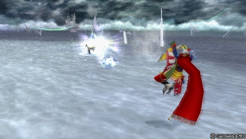
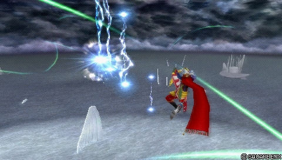
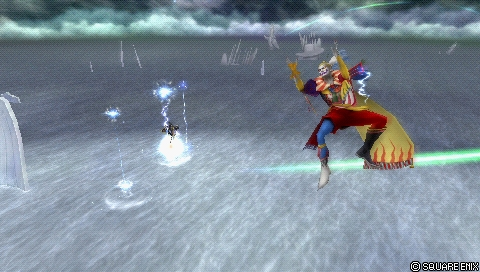
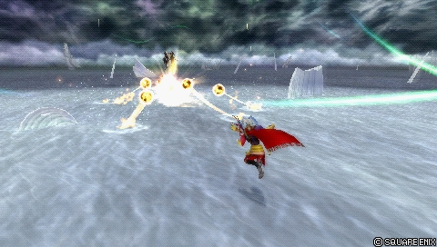
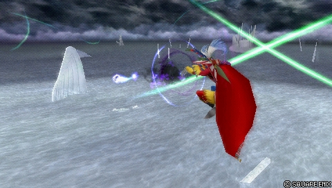
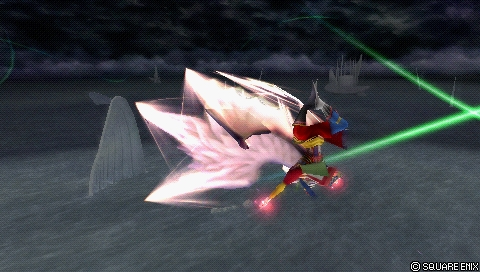
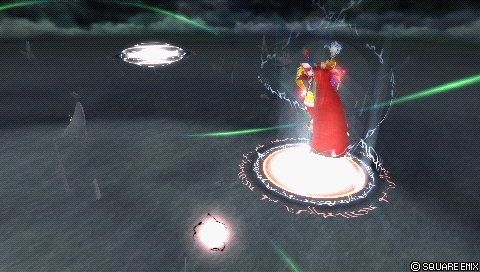

Defensive zoner: Waggle-Wobbly Firaga, elite vertical mobility and explosive damage
Fastest BRV 13F (Scatter-Spray Blizzaga)1F (EX Mode Ultima)Fastest HP 51F (Havoc Wing)Dash 81 (Below Average)ATK 111DEF 1101-hit HP YesAllHP links YesCombos only
Standing in the meta
Tier A11th of 30 — 2017 tournament tier list from dissidia.wiki (half matchup values, half expert player votes).
Ranked 11th (tier A) on the 2017 tier list; the overview states that he has been rated between high tier and mid tier competitively, strong with momentum, fragile without it.
Overview
Kefka is a defensive zoner who operates at mid and long range. His usual strategy: create space with reverse dashes and Precision Jumps, then cast his signature Waggle-Wobbly Firaga — a homing projectile that alternates between Ranged Low and Ranged Mid priorities and starts combos on hit. The opponent, pushed into closing in, exposes themselves to his biggest moves. Up close, he threatens with the mid priority Scatter-Spray Blizzaga; from afar, he harasses with Extra-Crispy Firaga, Lickety-Split Thundaga, Hyperdrive or Trine.
His strengths: space control, good defensive mobility and enormous damage potential. His high base ATK and the heavy base damage of his bravery attacks hurt badly in an assist combo; EX Mode (through EX Doublecast) and the assist (midscreen HP Chase setups) both multiply his damage. His dash speed is enough for self-defence and his vertical movement is first class: Precision Jump creates distance very quickly, and his fast fall makes his air dodge one of the safest in the game.
His weaknesses are just as pronounced: weak EX generation, which leaves him dependent on EX Cores and limits access to his powerful EX Mode; trouble against projectiles that spawn on his position and against fast rushdown, such as Lightning or Onion Knight. His Ranged Low attacks, with telegraphed startups or long recoveries, force him to take heavy risks — including in the assist gauge economy, for want of a fast, safe poke to build it. A competent user of Side by Side builds, he can nonetheless establish big momentum off a single good hit.
Competitively, Kefka has been rated between high tier and mid tier. He thrives on momentum and can suffer badly without it. His space control remains good even on small stages, and while he has answers to specific situations (fast attacks, single-hit HP attacks), everything he does commits him: nothing in his kit combines a fast startup with a short recovery. His defensive style stands out in the roster all the same, and it rewards dedicated players handsomely.
Strengths
Damage: high ATK, Side by Side synergy, good base damage on his favoured bravery attacks — his output shines whatever the build.
Range: left alone, he creates presence everywhere on the stage, from Waggle-Wobbly Firaga with its relentless homing to Trine with its infinite range.
Mobility: one of the strongest users of Precision Jump (speed and height), a fast fall that makes his air dodges markedly harder to punish, and a dash sufficient to keep aggressive characters busy.
Defensive play: reverse dashes on the ground and in the air quickly create the distance his bravery attacks need — he dictates the pace of the match.
Momentum: every hit lets him cast another Waggle-Wobbly Firaga and harden his defence; with Side by Side and LV2 Assist Change, he hits back with Havoc Wing and cements his advantage in the gauge economy.
EX Mode: casting two spells at once hugely amplifies his space control and his damage, and Ultima comes out instantly.
Weaknesses
Vulnerable to whiff punishing: many of his bravery attacks have a long startup, punishable on reaction with an assist or contestable with a Free Air Dash; even Scatter-Spray Blizzaga, his great close-range threat, exposes him if it is dodged.
Assist gauge on whiff: without a fast, low-commitment poke, building assist gauge safely is very difficult.
EX generation on hit: two of his favoured bravery attacks produce no EX Force at all — his EX intake is often limited to EX Cores, to the last hits of Extra-Crispy Firaga and to occasional whiff punishes with Lickety-Split Thundaga.
Reversing momentum: if the opponent systematically intercepts his bravery attacks with an assist or through an offensive approach, Kefka has to take heavy risks to survive.
Small stages: stages such as M.S. Prima Vista leave less room to create space and cast his spells safely.
Mobility profile (normal mode) — position within the cast
Gold dot: this character · small dots: the rest of the cast · violet line: average. Wiki values, lower = faster; the rank on the right reads directly (1st = fastest).
Moves
Startup of Kefka Palazzo's moves
Shorter bar = faster move. Startup in frames (60 fps, dissidia.wiki data), with priority after the value. Moves marked ★ are the fastest in the kit — usually your best punish and pressure tools.
Bravery attacks
List
All of Kefka's bravery attacks exist on the ground and in the air, with shared data.
Twisty-Turny Blizzaga21FRanged Low

An ice sphere on a fixed arc that homes in on the opponent after touching the ground: one of his fastest moves in startup and recovery, active for a long time, but limited to ground-to-ground interactions since the homing does not activate without a floor. Main use: at the start of a match, forcing the opponent to move so as to buy time for his other spells — the projectile is fast enough to hit a dashing opponent from behind. The initial shot hits airborne opponents with decent hit stun, but the damage is low without the follow-up (which can Wall Rush). In EX Mode: an extra hit on landing holds the opponent in place before a pursuit dash, and the projectile lingers for a while even on a miss.
One of his strongest bravery attacks, used up close to push the opponent away and convert into an assist combo (from Waggle-Wobbly Firaga): a 13F startup and mid priority make it an unreactable mixup against aggressive characters, one that even staggers ordinary blocks. Against a good read, Kefka is wide open to a whiff punish (an assist can intercept, depending on the matchup). The projectile stays for over a second before sending out ice shards; careful, a block can send the shards back at Kefka. Both parts inflict fixed hit stun: hitting at mid or maximum range makes the shards connect more consistently, but even at point-blank range they rarely all miss — assist combos start reliably even on a glancing hit. In EX Mode, the shards chase a second time (and can re-combo), with the same risk of being reflected on block.
A favoured bravery attack: a long startup and low priority make it poor at long range, but the reward on hit is decent and it synergises with Scatter-Spray Blizzaga and Waggle-Wobbly Firaga. Often used in assist combos to add damage and create chase loops that force HP damage or extend the aerial combo. A faster startup and a later cancel window than Waggle-Wobbly Firaga: it works as a mixup against assist punish attempts with Auto Assist Lock On, since the opponent is expecting a Firaga or a Blizzaga instead — to be used sparingly in neutral. Two hit stuns: the initial projectile pushes the opponent back briefly; the three homing projectiles after the split send them upwards with enough hit stun to dodge cancel and call the assist, then cast another Waggle-Wobbly Firaga in a chase loop. At point-blank range in a corner or just above the opponent, each projectile can hit twice (double damage) — excellent on small stages with low ceilings such as Pandaemonium and Kefka's Tower, and damage builds make the most of it.
The cornerstone of his zoning: a slow projectile with relentless homing, which starts as Ranged Low then alternates with Ranged Mid every second — impossible to dash through or to block without a stagger during the mid phases, with zigzags that catch opponents from behind. It is the spell to cast or prepare after every attack in most matchups against close-range characters. On hit, it holds the opponent in place for about a second: combos into other moves or the assist, very handy solo HP conversions without a wall (Havoc Wing when close, Trine on reaction), and the landing lag can start an infinite combo with the following Firagas. Two Firagas can chase simultaneously (a third erases the first, unless the first is already connecting). Given the slow startup, it has to be cast without being interrupted: multi-jumps with Precision Jump towards a high ceiling, a reverse Free Air Dash against those who must approach (Vaan, Cloud, Prishe), or straight after an assist, an HP attack or an opponent's whiff. No distinct sound cue: dashing first hides the cast behind the dash cry. In EX Mode, each cast produces two projectiles and the simultaneous maximum rises to 4 — a major reason why his EX Mode is one of the strongest in the game.
Base damage
21 (3 x 7)
Startup
59F
Type
Magical
Priority
Ranged Low (small) Ranged Mid (big)
EX Force
0
Cancels
Dodge
CP (mastered)
30 (15)
Lickety-Split Thundaga35FRanged Low

A series of lightning bolts advancing in a roughly straight line: a relatively fast long-range punish, useful as a whiff punish and decent on the ground despite very mediocre vertical tracking. Enough hit stun to combo into the assist after a dodge cancel or an instant empty chase — it takes some practice, but it is a consistent combo starter. In EX Mode, two series of bolts follow one another (the second travelling further); a dodge cancel after the first series does not cancel the second, which makes conversions easier to confirm visually. Worth noting: a gap between the bolts can make it miss entirely at point-blank range, a distance Kefka does not linger at anyway.
Normal35FRanged Low
Base damage
15 each
Startup
35F
Type
Magical
Priority
Ranged Low
EX Force
30 each
Effects
Chase
Cancels
Dodge
CP (mastered)
30 (15)
EX Mode35FRanged Low
Base damage
10 each
Startup
35F
Type
Magical
Priority
Ranged Low
EX Force
21 each
Effects
Chase
Cancels
Dodge
CP (mastered)
30 (15)
Zap-Trap Thundaga65FRanged Low

Makes lightning bolts appear progressively on the opponent's position: fairly mediocre accuracy, but assist conversions through an instant empty chase or a dodge cancel, and if several bolts chain together, one of the biggest frame advantages on an empty chase in the game. Fairly low recovery: a dodge cancel is possible after the first bolts for solo follow-ups with Scatter-Spray Blizzaga and Havoc Wing, or even Waggle-Wobbly Firaga at point-blank range — since every bolt sends the opponent upwards, positioning is key. Its low priority, slow startup and lack of threatening presence in neutral make it hard to justify next to his other bravery attacks, especially in the air where the Scatter-Spray / Waggle-Wobbly / Extra-Crispy trio synergises.
Base damage
each (10)
Startup
65F
Type
Magical
Priority
Ranged Low
EX Force
each 15
Effects
Chase
Cancels
Dodge
CP (mastered)
30 (15)
Meteor35F (first appearance)Ranged Low

Five fireballs that surround the opponent before homing in: if everything connects, one of his strongest bravery attacks in damage and EX Force. Often outclassed all the same — long startup, low priority, mediocre area of effect in the air, low reward without an assist — and with no constant threat against dashes and dodges and no protection at range. In the air, the balls descend for a long time towards the ground, which confines it to small stages or to positions close to the ground. Each projectile sends the opponent upwards and combos into the assist and other attacks; it is hard to confirm visually in neutral, and simpler with a Waggle-Wobbly Firaga in support and a position above the opponent. In EX Mode, it becomes usable in the air without depending on the ground: the projectiles stop their descent before homing in, as they do on the ground.
Base damage
15 each (up to 75)
Startup
35F (first appearance)
Type
Magical
Priority
Ranged Low
EX Force
each 30
Effects
Chase
Cancels
Dodge
CP (mastered)
30 (15)
Ultima33F (orb) > 89F (explosion)Ranged Mid

A small projectile in front of Kefka then a wide area explosion that Wall Rushes: little used, low reward without a wall, and its roles are filled more effectively by his other bravery attacks with an almost equally long startup. More consistent on small stages (M.S. Prima Vista, Phantom Train) where it occupies more space with better odds of a Wall Rush, and its multiple explosions hurt badly alongside multi-hit assists (especially on Phantom Train). In EX Mode, Ultima becomes active on frame 1 — the fastest bravery attack in the game, on a par with the startup of a block — and its Ranged Mid priority quickly staggers the opponent's blocks.
Normal33F (orb) > 89F (explosion)Ranged Mid
Base damage
40 (15, 25)
Startup
33F (orb) > 89F (explosion)
Type
Magical
Priority
Ranged Mid
EX Force
30 > 0
Effects
Wall Rush
Cancels
Dodge
CP (mastered)
30 (15)
EX Mode1F (orb) > 33F (explosion)Ranged Mid
Base damage
40 (15, 25)
Startup
1F (orb) > 33F (explosion)
Type
Magical
Priority
Ranged Mid
EX Force
30 > 0
Effects
Wall Rush
Cancels
Dodge
CP (mastered)
30 (15)
HP attacks
List
All the HP attacks exist on the ground and in the air with shared data, except Hyperdrive, which is available only on the ground.
Havoc Wing51FMelee High

His basic move: Kefka swoops vertically onto the opponent before the HP wing hit. A consistent single-hit HP attack with strong vertical tracking and long active frames: an assist combo starter after Waggle-Wobbly Firaga, an assist combo finisher, or a riposte after a block. Its tracking makes it reliable for converting an LV2 Assist Change stagger into HP damage — valuable with Side by Side, and for checkmates with enough bravery. The active frames make it awkward to whiff punish head-on, but the recovery stays long. No known effect in EX Mode.
Ground only: a homing wave whose hitbox and range grow while Square is held, until it covers large distances; charged, it combos into the assist on hit. Once released, it travels very fast — good for dodge punishes — and being able to release it at any moment allows him to control space through the threat of an early shot. Good tracking, but a blind spot just above Kefka's head, and it is of little use against those who fight comfortably at height (Sephiroth, Gilgamesh). In EX Mode, it stops on the way to realign its tracking (covering the vertical blind spot, and sooner if it is barely charged); activating EX Mode during the startup automatically converts it into the EX version — useful in matchups such as Jecht that seek contact.
Three homing projectiles around the opponent: it combos into assists and into Scatter-Spray Blizzaga with a dodge cancel on hit, but its greatest strength is its infinite range. It converts stray Waggle-Wobbly Firagas and harasses opponents going for an EX Core, even from behind walls or from the other end of the stage — dashing towards a Core can end in a meeting with the spell. In EX Mode, Trine is cast twice in a row: the dodge cancel window is identical, but dodging too early cancels the second Trine — delay it slightly so that both come out.
Startup
73F
Priority
Ranged High
EX Force
each 21
Cancels
Dodge
CP (mastered)
30 (15)
Forsaken Null89FRanged High

A sigil that slowly tracks the opponent while firing spheres one by one: often outclassed by his other HP attacks because of its extremely slow startup, its homing and its unremarkable rate of fire — it neither covers distance like Trine nor supports close-range play like Havoc Wing. On hit it Wall Rushes, including on the ground against an opponent equipped with Auto Recovery. In EX Mode, an extra projectile goes upwards, increasing the potential range — but it remains fairly easy to dodge.
Startup
89F
Priority
Ranged High
EX Force
0
Effects
Wall Rush
Cancels
Dodge
CP (mastered)
30 (15)
EX Mode: Power of Destruction! & EX Burst
The “Power of Destruction!” EX Mode — effects: Regen, Critical Boost, Glide (hold X in the air to move freely through the air) and Exhilarating Magic (always active: every spell becomes more chaotic — multiple projectiles, magical rebounds and other unpredictable effects).
In practice, each spell gains a documented effect: Waggle-Wobbly Firaga casts two projectiles per cast with the simultaneous maximum raised to 4 (a major reason why this EX Mode is described as one of the strongest in the game), Ultima becomes active on frame 1 (the fastest bravery attack in the game), Scatter-Spray Blizzaga has its shards chase a second time, Lickety-Split Thundaga fires two series of bolts, Meteor becomes usable in the air without depending on the ground, Trine is cast twice, Hyperdrive realigns its tracking on the way (covering its vertical blind spot), Twisty-Turny Blizzaga gains a holding hit on landing and Forsaken Null an extra projectile upwards. Only Havoc Wing has no known effect.
The documented flip side: Kefka's EX generation is weak — two of his favoured bravery attacks produce no EX Force at all — so he mostly depends on EX Cores to reach this powerful EX Mode.
EX Burst : Light of Judgment: a light descends from the heavens and purifies everything in its path. Memorise the commands displayed, then enter them in order.
Gameplan & advanced tech
The gameplay loop: create space (reverse dashes on the ground and in the air, Precision Jump towards the heights), then cast Waggle-Wobbly Firaga in the safe moments — after an assist, an HP attack or an opponent's whiff. The projectile's alternating priority rules out dashing and blocking without a stagger, and forces the opponent to expose themselves. On hit, it holds the target for a second: a conversion into an assist combo, into Havoc Wing when close or into Trine on reaction, and every hit allows another one to be cast to harden his defence.
Up close, Scatter-Spray Blizzaga (13F, mid priority) is the unreactable mixup that pushes aggressive characters away and converts into an assist combo, including on a block stagger. At range, Extra-Crispy Firaga (an anti assist punish mixup and the engine of the chase loops), Lickety-Split Thundaga (a whiff punish with conversions through a dodge cancel or an empty chase), Hyperdrive (space control through the charge, dodge punishes) and Trine (infinite range, EX Core harassment) round out the arsenal. The documented aerial combination is Waggle-Wobbly, Scatter-Spray and Extra-Crispy.
Damage comes through assist combos, where his high ATK and base damage hurt badly: the core is the Waggle-Wobbly Firaga > Extra-Crispy Firaga chase loop with the Kuja assist, which forces HP damage or extends the combo. Solo, the documented routes start from Waggle-Wobbly Firaga (into SSB, ECF, LST, Meteor, Havoc Wing or Trine), from Trine (into Scatter-Spray Blizzaga) and from Lickety-Split Thundaga (dodge cancel into SSB or Trine).
On resources, everything is a trade-off: the assist gauge cannot be filled safely for want of a fast poke, and EX comes mainly from EX Cores. Side by Side turns every good hit into big momentum, and LV2 Assist Change converts into Havoc Wing thanks to its tracking. Conversely, if the opponent intercepts his bravery attacks with an assist or imposes fast rushdown (Lightning, Onion Knight), Kefka has to take heavy risks — and small stages reduce his margin for casting spells safely, even if his space control remains decent there.
Character-specific tech
Waggle-Wobbly > Extra-Crispy chase loop
After a hit converted with the assist, Extra-Crispy Firaga's split projectiles give enough hit stun to dodge cancel, call the assist and cast another Waggle-Wobbly Firaga: the loop forces HP damage or continues the aerial combo. Easiest to set up with the Kuja assist from any hit; possible with Jecht but harder (it requires very close positioning).
Extra-Crispy Firaga double hit
At point-blank range in a corner or just above the opponent, the three projectiles can each hit twice: double damage, highly profitable on small stages with low ceilings (Pandaemonium, Kefka's Tower) and with damage builds. The exact cause is uncertain (probably the transition when the projectile splits in three).
Hiding Waggle-Wobbly Firaga
The spell has no distinct sound cue on startup: dashing first then inputting the attack immediately hides the cast behind the dash cry, while his vertical mobility places Kefka outside the opponent's camera view.
Firaga landing lag infinite
Waggle-Wobbly Firaga inflicts a landing lag on hit, which can start an infinite combo with the following Waggle-Wobbly Firagas (no knockback at the end of the hit, a brief but real combo window).
Thundaga empty chase / dodge cancel conversions
Lickety-Split Thundaga combos into the assist after a dodge cancel or an instant empty chase; Zap-Trap Thundaga does the same and, if several bolts chain together, offers one of the biggest frame advantages on an empty chase in the game, with solo follow-ups (Scatter-Spray Blizzaga, Havoc Wing) after dodge cancelling the first bolts. Careful not to confuse two uses of the term: these empty chases serve to convert into the assist, but the community record of empty chases leading to an assist gauge reset credits Kefka with no move at all — Extra-Crispy Firaga would probably work there if only one of its projectiles connected, without any known method of achieving it.
Thanks to its infinite range, Trine harasses opponents going for an EX Core, even cast from behind walls or from the other end of the stage: dashing towards the Core can throw them into the spell. It also converts stray Waggle-Wobbly Firagas.
Hyperdrive EX conversion
Activating EX Mode during Hyperdrive's startup automatically converts it into the EX version (tracking realignment on the way, coverage of the vertical blind spot) — useful against those who seek contact, such as Jecht.
Documented solo combo routes
Four routes stand out in the community record: Meteor, Trine, Zap-Trap Thundaga or Lickety-Split Thundaga at mid/long range, dodge cancel, then Scatter-Spray Blizzaga; Zap-Trap Thundaga in its ideal pattern, linking either into dodge cancel > Waggle-Wobbly Firaga > Havoc Wing, or into empty chase > Scatter-Spray Blizzaga; Waggle-Wobbly Firaga at close range into Havoc Wing; and Waggle-Wobbly Firaga on a delayed hit, landing lag, then Trine.
Universal techniques (blodge, dash feint, lock off, dodge punishment): see the Techniques & glitches page.
Matchups
The dedicated matchups page is a stub: only the elements of the overview and of the move notes are authoritative.
His documented difficulties: projectiles that spawn on his position and fast rushdown styles, with Lightning and Onion Knight named explicitly. Hyperdrive is also of little use against characters who fight comfortably at height, such as Sephiroth and Gilgamesh, and small stages (M.S. Prima Vista) compress the space he needs to cast.
Against characters who have to approach him — Vaan, Cloud and Prishe are cited — the reverse Free Air Dash is the general-purpose movement option that buys the time to cast Waggle-Wobbly Firaga, the answer to favour in most matchups against close-range characters. Against Jecht, who seeks contact, Hyperdrive's EX conversion is mentioned as useful.
Kefka generally equips Waggle-Wobbly Firaga, Scatter-Spray Blizzaga and Extra-Crispy Firaga as aerial bravery attacks. Two builds are documented (450 CP, Equip Glitch assumed), reflecting the overview's trade-off between damage and EX access.
Hybrid
A standard damage build with EX intake enabled — 10299 HP, 917 BRV, 180 ATK, 183 DEF, maximum booster x7.4; Kuja assist, Rubicante summon; Dancing Mad with Lufenian Dirk, Lufenian Headband and Lufenian Vest (Seal of Lufenia special effect); accessories: Hyper Ring, Earring, Battle Hammer, Large Gap in HP, BRV > Base Value, Pre-EX Mode, Pre-EX Revenge, Aerial, Opponent HP < 50 %, Tenacious Attacker.
Starts the match with 90 % of the EX gauge filled — 10299 HP, 956 BRV, 179 ATK, 185 DEF, no booster; Jecht assist; Dancing Mad with Lufenian Shield, Lufenian Helm and Lufenian Armor (Judgment of Lufenia special effect); accessories: Earring, Dismay Shock, Battle Hammer, three Cyan Drop, Cyan Gem, Tenacious Attacker, Glutton, First to Victory.
The equipped moves of the two builds are not filled in in the tables (only the general sentence about the three aerial bravery attacks is authoritative), and no summon is given for the High Initial EX build.
Build and check a Kefka Palazzo loadout slot by slot: build creator (CP gauge, ability exclusions and tournament rules applied).
Assist synergies
Kefka Palazzo as an assist
As an assist, Kefka is ranked in the Low tier of the assist tier list, and no prose evaluation accompanies his data. His assist attacks: Meteor as a ground BRV attack (35F, spawning on the player, up to 75 damage, Chase), Extra-Crispy Firaga as an aerial BRV attack (49F, spawning on the opponent, up to 45, Chase), Hyperdrive as a ground HP attack (143F, Chase) and Havoc Wing as an aerial HP attack (51F, Wall Rush).
Recommended assists
Kuja — His strongest and most consistent assist: the aerial BRV Strike Energy synergises with his favoured bravery attacks anywhere on the stage. The easiest way to set up the Waggle-Wobbly Firaga > Extra-Crispy Firaga chase loop from any hit, he also creates space for an extra Firaga through Trine, and even sets up Extra-Crispy's double damage in a corner. Up close: Trine after the assist then Scatter-Spray Blizzaga for guaranteed criticals that shred bravery.
Jecht — A faster ground assist with good holding potential, but he often needs the ground to optimise the aerial BRV combos. What he loses in damage consistency depending on position, he makes up for in setups: comboing a Meteor into Waggle-Wobbly Firaga, following up after the Hyperdrive HP attack, preparing follow-ups close to the ground. The Firaga chase loop remains possible but more demanding (very close positioning to the opponent).
Community tech
Assist conversion off a blocked Scatter-Spray Blizzaga
A video example of Scatter-Spray Blizzaga's block stagger converted into an assist combo.
What is a good Kefka setup? (GameFAQs thread) 2011
A period thread from the GameFAQs board: typical movesets (WW Firaga / SS Blizzaga / EC Firaga in the air), pressure with Waggle-Wobbly Firaga while punishing dodges with Scatter-Spray Blizzaga, and assist conversions (Kuja, Aerith, Sephiroth) into Havoc Wing.
A community record of solo combo routes for all 31 characters, compiled by Eddiegames on the Discord DISSIDIA and published on pastebin (last updated December 2022). Kefka is described there as a character with very free combos, centred on Waggle-Wobbly Firaga; the author explicitly leaves EX Mode out of the record.
List of empty chases leading to an assist gauge reset (Eddiegames)
A character-by-character record. Kefka is credited with no move at all: that precision is what separates his assist conversions through an empty chase, which are real, from the gauge reset he does not get.
The dedicated matchups page is undocumented (a stub): the matchups summary rests solely on the overview and the move notes (Lightning, Onion Knight, Sephiroth, Gilgamesh, Jecht, Vaan, Cloud, Prishe).
No unique mechanic is documented (the section is absent from the sources).
Combos: only the solo routes are listed (in shorthand notation, without damage figures or detailed conditions); no assist combo is quantified.
Builds: the equipped moves are not filled in for either build, and the summon is missing from the High Initial EX build.
Assist: no prose evaluation of Kefka as an assist (table data and the Low meta tier only); the assist gain values of the moves are not filled in.
The YouTube references are undated (the date field is null); the startup of the second EX volley of Scatter-Spray Blizzaga is unknown (“??”).
The community's solo combo record deliberately leaves Kefka's EX Mode out (“EX Mode just does whatever it wants”): no solo EX Mode route is drawn from it.
That same record mentions a follow-up named “Split Shot Blizzaga” which matches no move name in the wiki's data: the branch has not been used, for want of being able to identify it with certainty.
The community's empty chase record is undated: how current it is cannot be established.

 Assist
Assist Dancing Mad
Dancing Mad Lufenian Dirk
Lufenian Dirk Lufenian Headband
Lufenian Headband Lufenian Vest
Lufenian Vest Hyper Ring
Hyper Ring

 Large Gap in HP
Large Gap in HP BRV ≥ Base Value
BRV ≥ Base Value Pre-EX Mode
Pre-EX Mode Aerial
Aerial HP ≤ 50%
HP ≤ 50% Tenacious Attacker
Tenacious Attacker